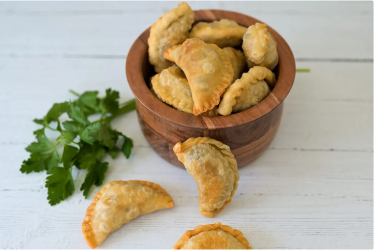

sambousik
our recipe from the middle east especially syria where there called burak
it is considered as the basic dish in ramadan
to prepare sambousik follow the steps below
- the dough ingredients:
- the filling ingredients :
- minced meat
- pepper
- onion
- salt
now the steps
- mix the dough ingredients and let it cool for 15 min
- put the meat in frying pan
- add the salt pepper peaces of onion
- Keep stirring the meat until it is cooked
- let the meet chill
- Roll out the dough and place it in the mold
- fill it with the filling, but not too much
- In a deep bowl, put the frying oil, let it heat up and start frying
this recipe perhaps introduce fresh
ENJOY
HOME